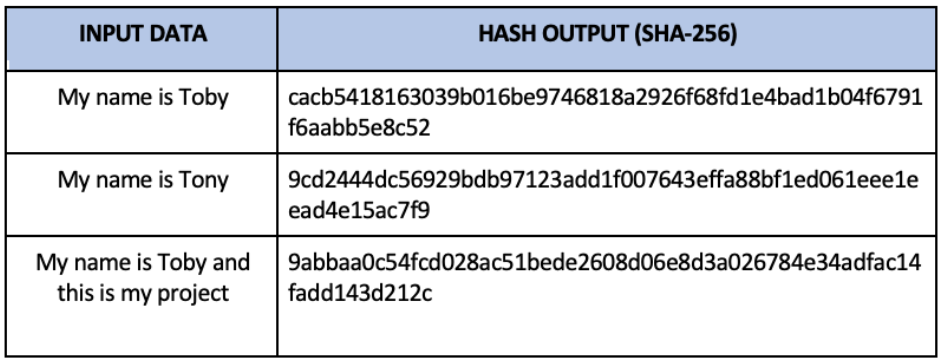
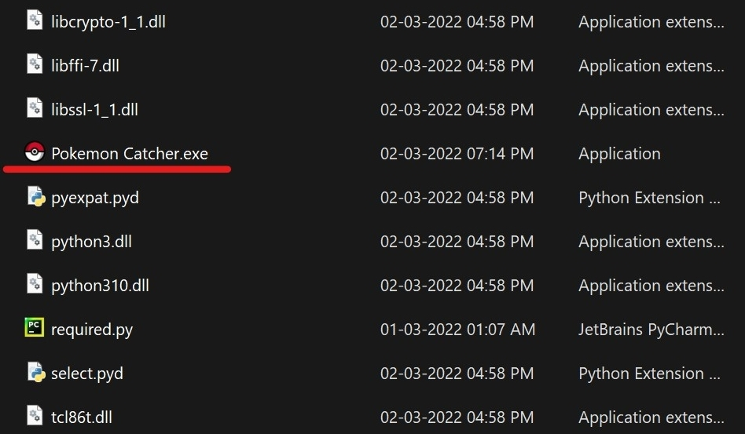
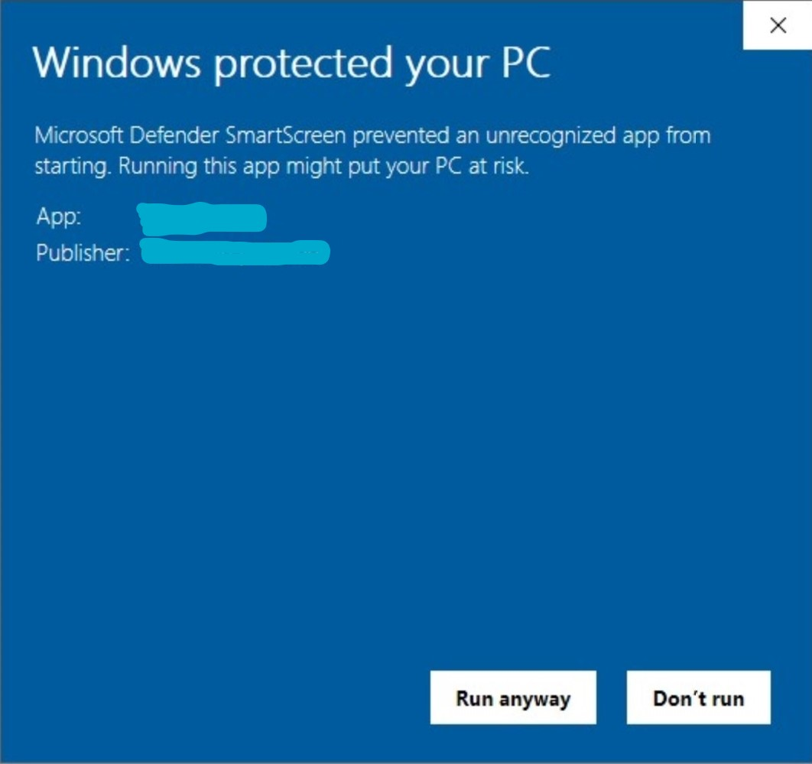

Instructions to use the bot
Here are the instructions to use my bot and
all the steps are mandatory
Before we start, please know this:
I'm in no way supporting to exploit the discord Terms Of Service through this.
I'm just a programmer, who tries to work out the logic of making such things 😄
But please feel free to check them out.
Please proceed only if you know the fee structure.
Fee structure:
First Week of bot is free.
For starting to use this bot: 9,000 pokecoins to PokeKing#3544 (After 1 week)
6,000 pokecoins every two weeks.
(Protip: Start using vote command in poketwo bot to earn 5,600* every week)
Note: All the mentioned steps are necessary and we do not store your data and it is safe in your computer as
we use sha-256 encoding to store your password.

Here are the steps if you agree to the above statements (All these steps are mandatory):
1
Basic requirements for this to work:
- Windows OS
- Google Chrome (Chrome version above v98)
- Private Discord Server
- Both Poketwo and Sierra bots in the private server
- Discord Account (Don't you think it is obvious?)
2
Sign in to your discord account in Google Chrome
3
Download this zip file:
Click here!
And extract them using your choice of extracting software.
4
Open any one folder of the two folders
and scroll to the bottom and double-click the .exe file or the file with an icon.

5
If Windows asks this

Click on More Info and then click on Run anyway
6
Repeat the steps from step 4 but open the other folder.
Note
If for any reason the bots stop working, just re-run them.
Have an internet connection. (This too is obvious)
When closing additional "cmd.exe" window, press on Ctrl + C and wait till it stops printing messages, and then close it.
It is recommended to run these in a seperate desktop. To know more: Click here!